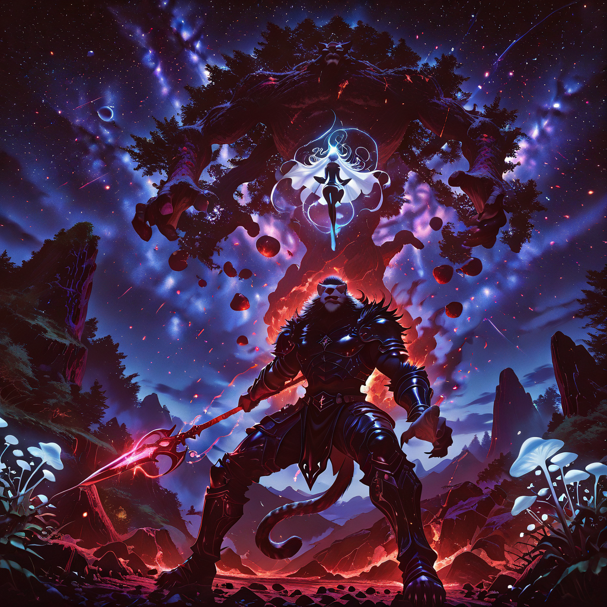
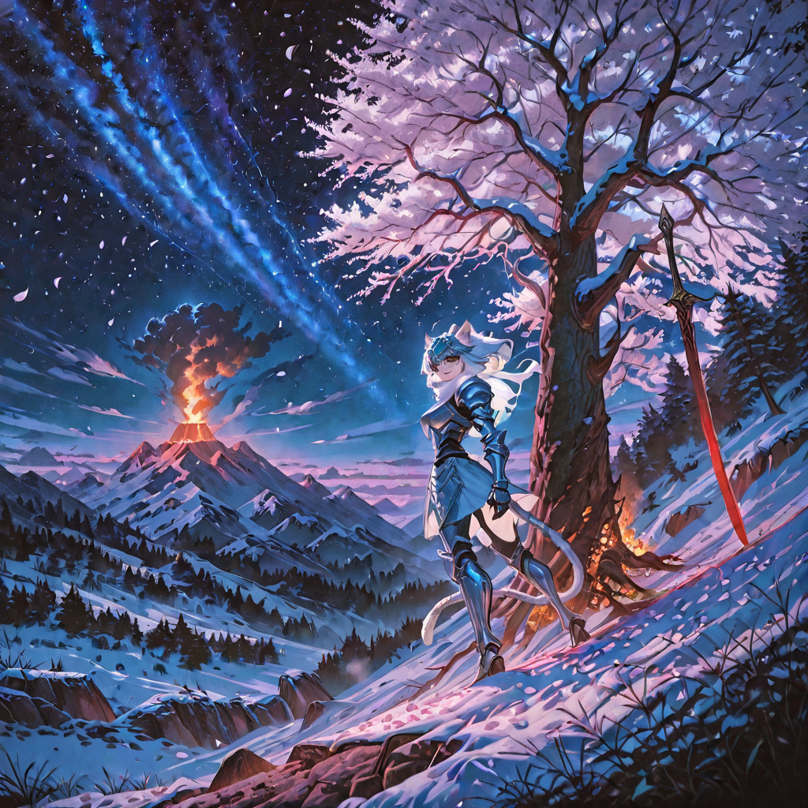
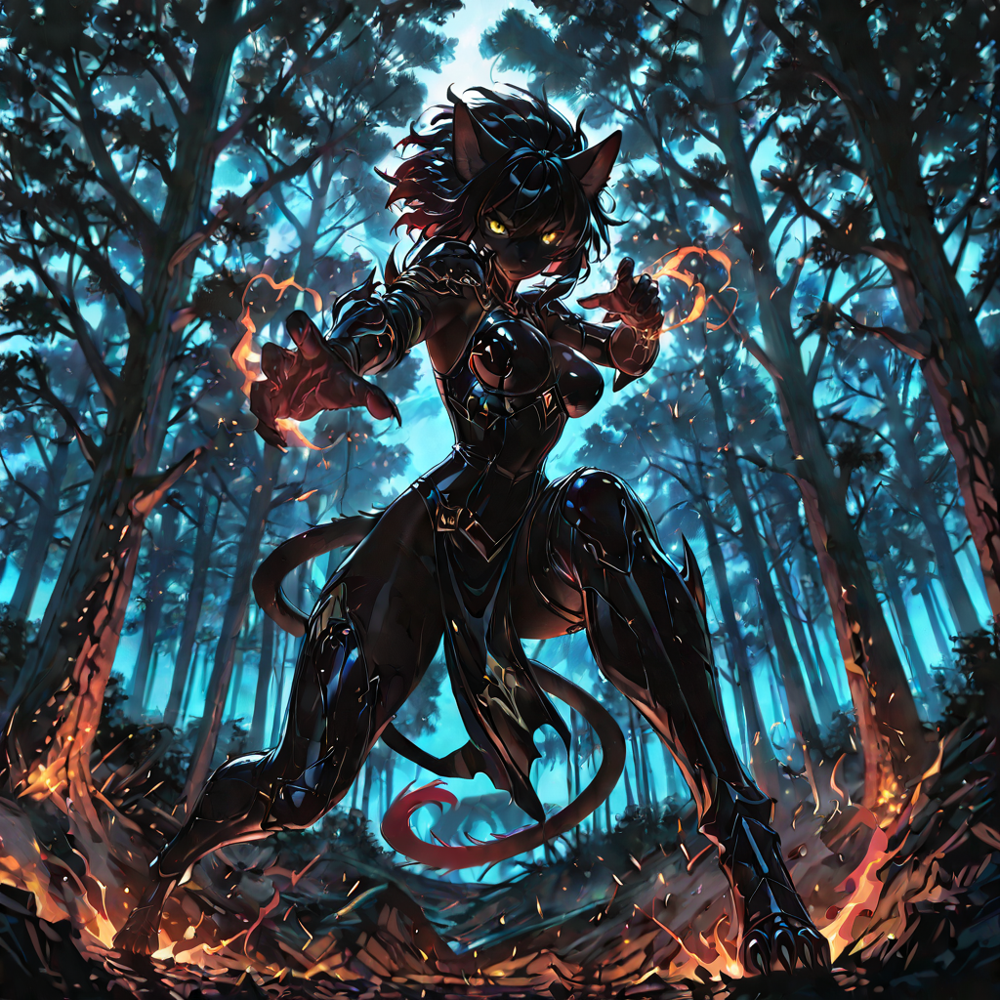
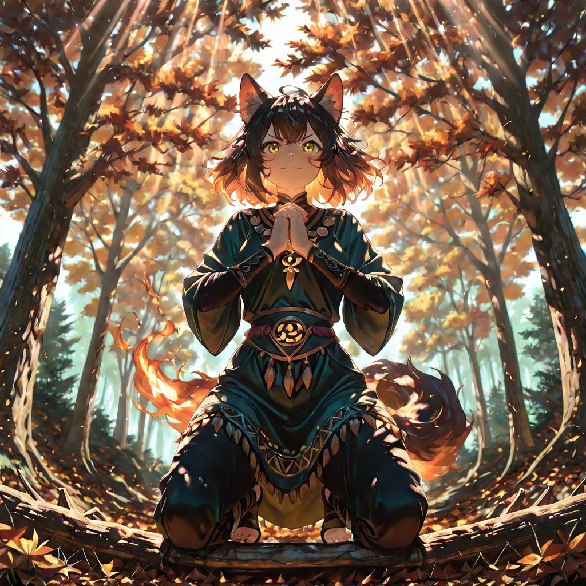
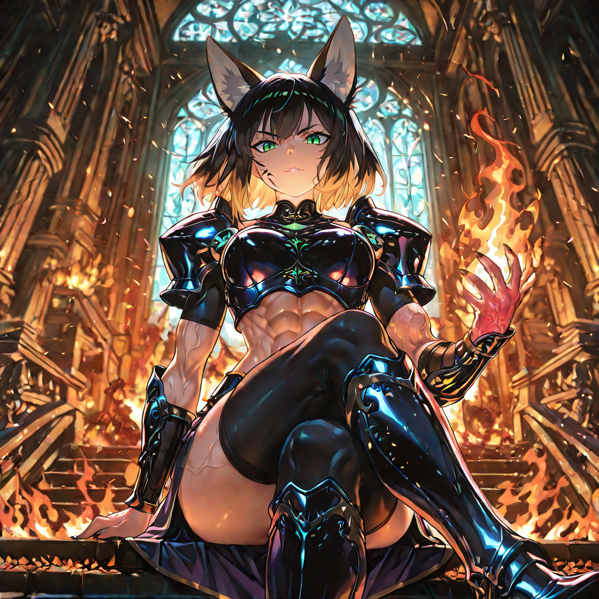
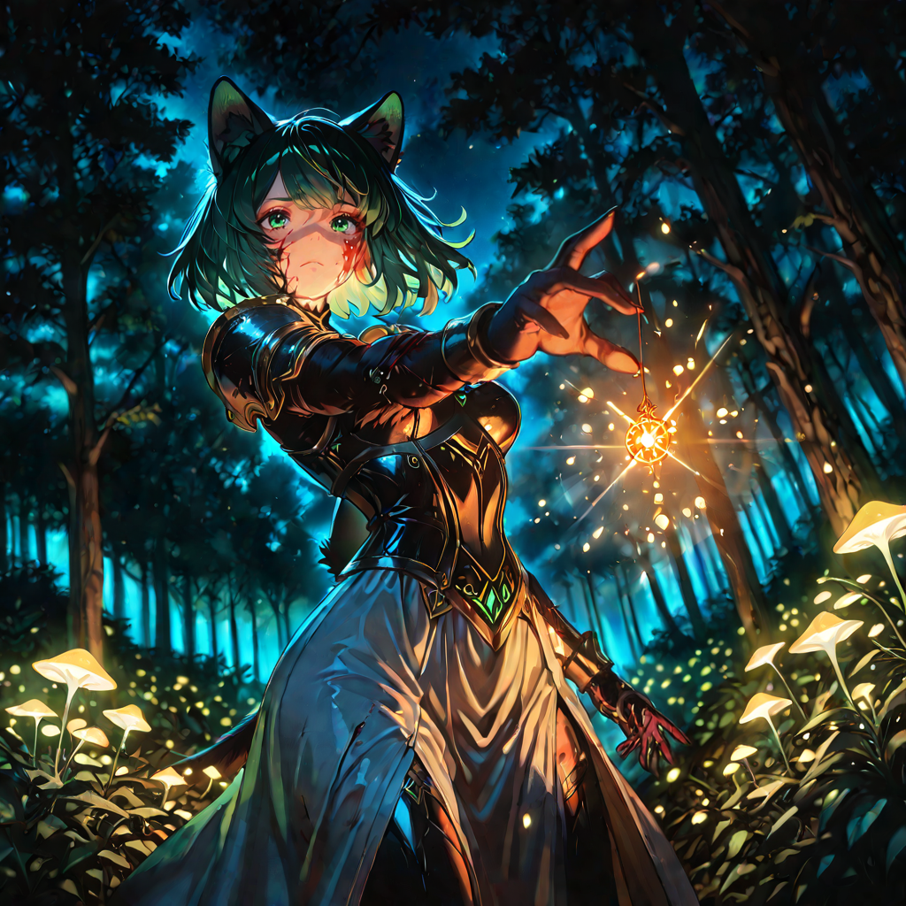

The history of the Coalition is not written in ink, but in claw marks on bark, in ash dissolved into soil, in the sound of a forest that breathes after a fire. It is a history older than language , and it has no need to be understood, only felt.

The First Convergence
Long before maps claimed the great forests and volcanoes as territory, the creatures that would become the Primal Coalition were already ancient. The Felid clans , swift, lethal leopard-kin , patrolled the shadowed canopy. The Spore-Risen , beings of moss, bark, and slow patient intelligence , held the roots. The Ember-Blooded , creatures born from volcanic fissures , guarded the scorched peaks.
They shared the same world and treated each other as competitors. For centuries, the balance of dominance shifted. Then the world itself bled , great veins of planetary energy ruptured, splitting the land, flooding the ancient forests with a light that had no color, only weight. The predators stopped. The flora listened. The fire watched. Something deep and shared stirred in all of them simultaneously.
It was not a voice. It was a pulse: the heartbeat of the planet in distress, calling its own immune system to order.

The Pact of Root and Claw
At the dawn of the Coalition, the clans of the Felid , swift leopard warriors , and the Awakened of the Spore , spirits of flora , were in constant conflict over territory. The felids clawed at sacred barks; the plants swallowed hunters with poisoned vines.
It was Khora who descended between them, wrapped in flames that did not consume the leaves but lit the night. She showed them that a claw infused with venomous sap strikes deeper, and that a forest protected by swift fangs never withers. She asked them a single question , not in words, but in demonstration: she placed a single ember inside the hollow of a great tree. It did not burn. The tree absorbed it, and for the first time, it blossomed in winter.
From that day, the close-combat hunters and the nature archers fought as a single organism. The Pact of Root and Claw was not signed. It was grown , roots intertwining around bones, sap hardening into armor around fur, fire keeping both warm on the coldest volcanic nights.

The Birth of the Bio-Obsidian
The enemies of the Coalition expected soft skin and flammable plants. When an invasion legion attempted to burn the Ash Grove , the sacred forest at the edge of the volcanic belt , they sent four hundred torchbearers at dawn. The grove was silent. They assumed the inhabitants had fled.
The warriors of the Coalition emerged from the smoke , not with burnt fur, but sheathed in a second skin, lustrous and impenetrable, akin to hardened resin and volcanic obsidian. Blades skimmed off it. Spells shattered against it. The invaders did not understand what they were seeing. They called it sorcery.
It was not. It was biology. Khora had discovered that prolonged contact with the volcanic mineral veins and the enzymatic compounds secreted by the ancient trees caused a slow mineralization of the outer layers of skin and bark. Pain accompanied the process; weeks of motionless agony in the heart of volcanic pools. But those who endured emerged encased in living bio-obsidian , armor that breathed, that healed, that grew back when shattered.
The invasion force retreated, but not all of them made it home. The forest remembered their torches.

The Great Cycle
The philosophy of the Coalition is not codified in books or carved in stone. It is lived, breathed, eaten, and fought. They call it Il Grande Ciclo , The Great Cycle , and every warrior, every druid, every beast-kin knows it in the marrow of their bones before they can form words.
Fire burns the old wood to nourish the soil. The predator brings down the weak to strengthen the pack. Decay feeds the seed. Death is not an ending but a transaction , energy transferred from one vessel to another, nothing wasted, nothing lost. The Coalition's alignment is Neutral. They are not cruel for cruelty's sake; they are precise. They are not kind for kindness' sake; they are strategic. Every action is weighed against the health of the whole.
Outsiders who interpret this philosophy as barbarism are reminded , gently, once , that the most sophisticated machine in existence is a functioning ecosystem. The Coalition merely chooses to be part of it, rather than above it.

The Silence of the Cinder Wastes
A century ago, a kingdom that prided itself on agricultural mastery chose to expand into the Bioluminescent Jungle , the most sacred territory of the Coalition. They brought axes, fire, and the confident certainty of a civilization that had never lost. They cleared five thousand acres in a single season.
The Coalition did not send ambassadors. They sent silence.
For thirty days, nothing moved in the surrounding territories. Trade caravans reported that the roads had vanished , not destroyed, but swallowed, roots closing over them overnight. Animals that normally stayed deep in the forests began appearing at city gates, watching. Plants began growing through the flagstones of border fortifications , not aggressively, but methodically, as if reclaiming something misplaced.
On the thirty-first day, Khora appeared at the capital of the offending kingdom. Alone. She sat on the steps of their palace and waited. The king sent guards. She did not move. He sent soldiers. She did not move. He sent his finest mages, who unleashed everything they had. She still did not move, because the fire that tried to burn her had already become part of her.
She spoke four words:
The kingdom replanted every tree. It took forty years. The Coalition watched the entire time. When the last sapling was placed, a single creature , a great silver-furred felid , was seen walking the edge of the new forest at dusk. It did not attack. It simply acknowledged. The debt was paid.

The Apex Conflict
Not all within the Coalition accepted the Pact equally. A generation after the First Convergence, a faction of beast-kin called the Apex Predators challenged the authority of the Spore-Risen. Their argument was primal and blunt: predators were the true pinnacle of evolution. Flora were support , useful, but secondary. They demanded that the Coalition be structured as a hierarchy of tooth over root.
Khora responded by doing something no one expected: she agreed to a trial. For one full hunting season, the Apex Predators would operate independently, with no support from the Spore-Risen. No poison on their claws. No camouflage from the canopy. No healing from the forest's enzymes. No warning howls from the bioluminescent plants.
They lost three times as many hunters in that single season as in the previous five years combined. On the last night, the Apex Predator's strongest warrior , a titan of muscle and bio-obsidian , came to Khora bloodied, exhausted, and carrying her fallen. She asked for no apology. She handed him a seed and asked him to plant it where his fallen comrade lay.
The Apex Predators have since been the Coalition's most ferocious close-combat force , and its most devoted protectors of the Spore-Risen.